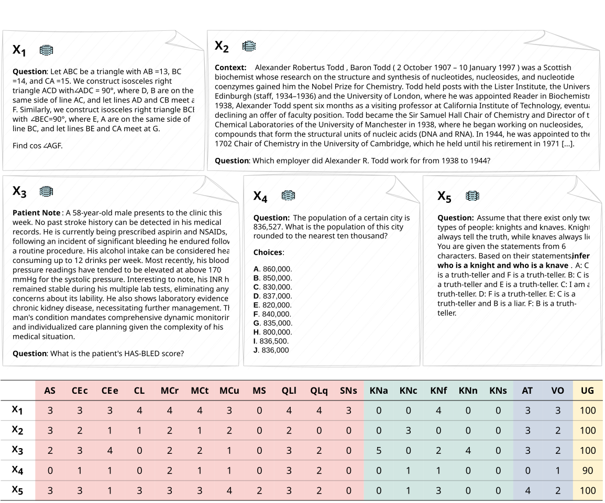
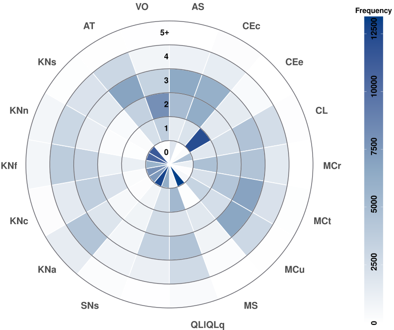
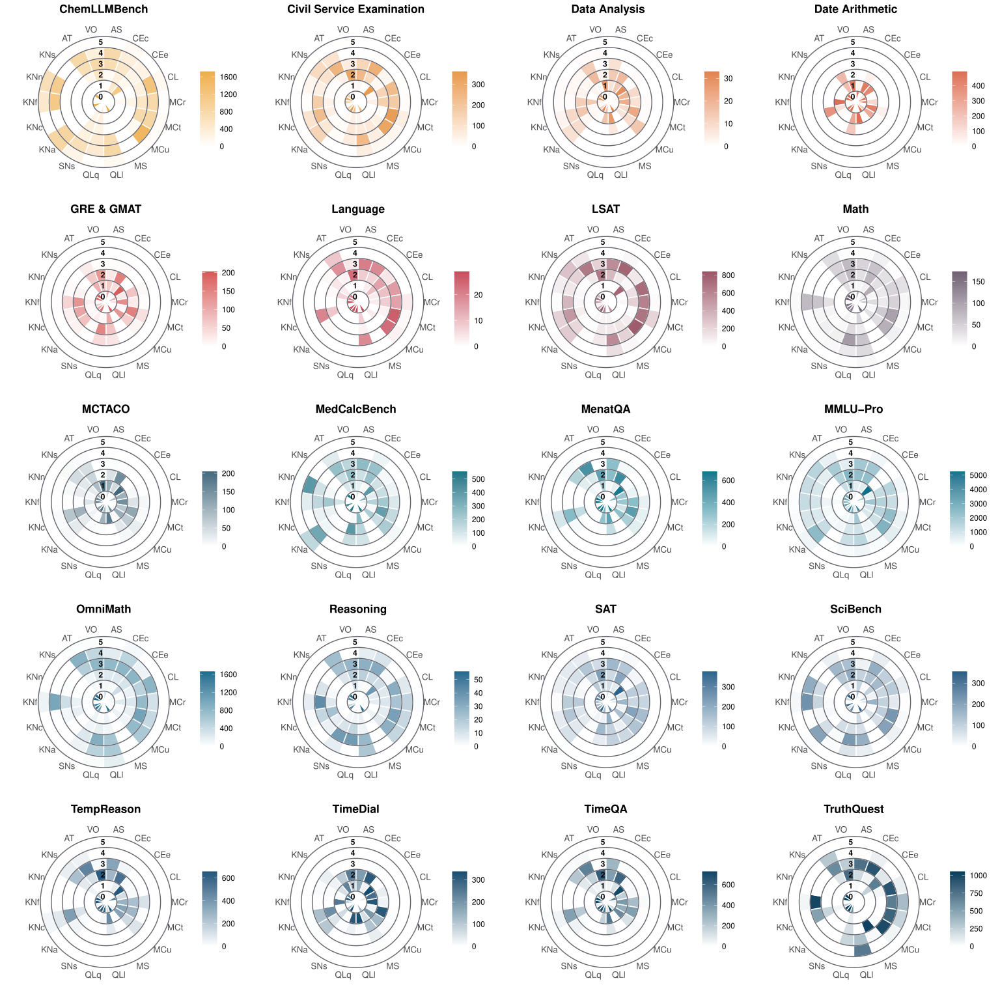
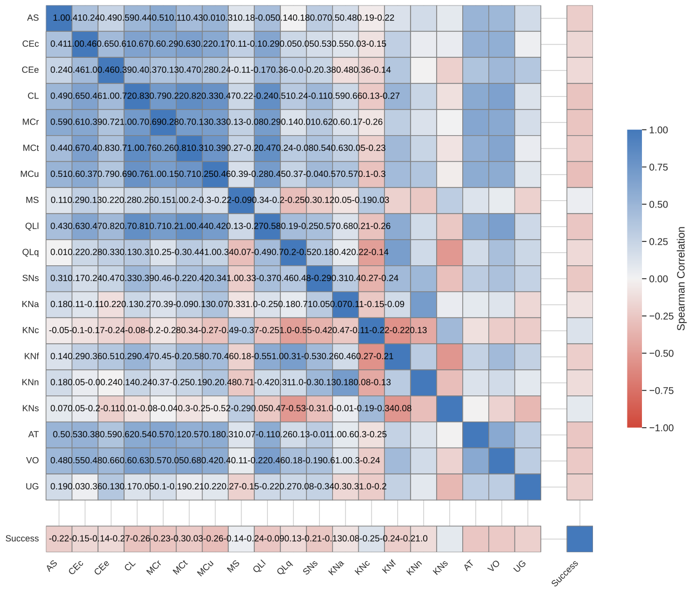
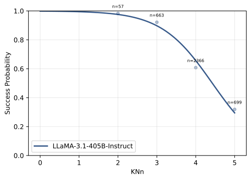
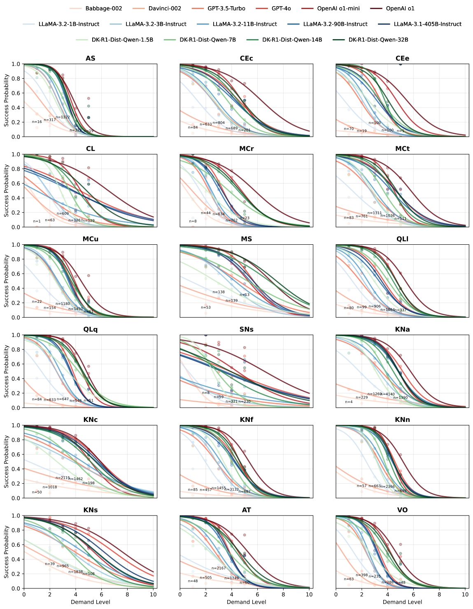
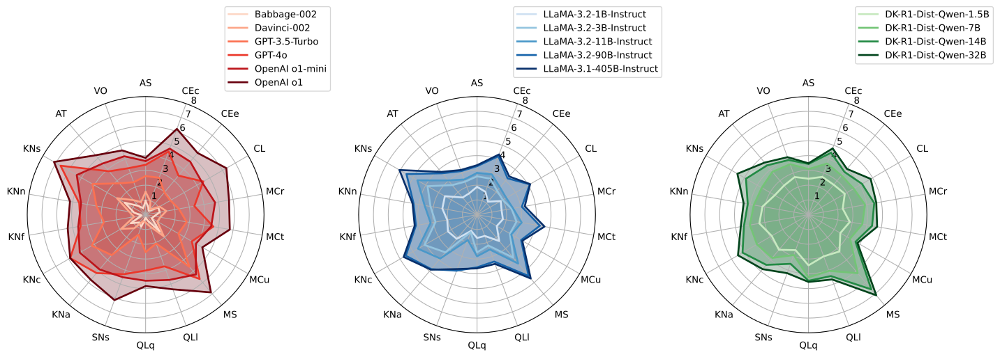

Ensuring safe and effective use of AI requires understanding and anticipating its performance on novel tasks, from advanced scientific challenges to transformed workplace activities. So far, benchmarking has guided progress in AI, but it has offered limited explanatory and predictive power for general-purpose AI systems, given the low transferability across diverse tasks. In this paper, we introduce general scales for AI evaluation that can explain what common AI benchmarks really measure, extract ability profiles of AI systems, and predict their performance for new task instances, in- and out-of-distribution. Our fully-automated methodology relies on 18 unique rubrics that place instance demands on general scales that do not saturate. Illustrated for 15 large language models and 63 tasks, high explanatory power is unleashed from inspecting the demand and ability profiles, bringing insights on the sensitivity and specificity exhibited by different benchmarks, and how knowledge, metacognition and reasoning are affected by model size, chain-of-thought and distillation. Surprisingly, high predictive power at the instance level becomes possible using these demand levels, providing superior estimates over black-box baseline predictors based on embeddings or finetuning, especially in out-of-distribution settings (new tasks and new benchmarks). The scales, rubrics, battery, techniques and results presented here represent a major step for AI evaluation, underpinning the reliable deployment of AI in the years ahead.
| Dimension (Broad) | Dimension (Specific) |
Description of Demands | ||
|---|---|---|---|---|
| AS | Attention and Scan | AS | Attention and Scan | Focus on or locate specific elements within a given stream of information or environment in the whole process of solving a task. |
| CE | Comprehension and Expression | CEc | Verbal Comprehension | Understand text, stories or the semantic content of other representations of ideas in different formats or modalities. |
| CEe | Verbal Expression | Generate and articulate ideas, stories, or semantic content in different formats or modalities. | ||
| CL | Conceptualisation, Learning and Abstraction | CL | Conceptualisation, Learning and Abstraction | Build new concepts, engage in inductive and analogical reasoning, map relationships between domains, and generate abstractions from concrete examples. |
| MC | Metacognition and Critical Thinking | MCr | Identifying Relevant Information | Recognise what information helps solve the task or does not, and how this recognition process unfolds as they work toward the solution. |
| MCt | Critical Thinking Processes | Monitor or regulate multiple thought processes to answer the question effectively, ranging from simple recall to high-level critical thinking. | ||
| MCu | Calibrating Knowns and Unknowns | Recognise the boundaries of one's knowledge and confidently identify what one knows they know, knows they don't know, or is uncertain about. | ||
| MS | Mind Modelling and Social Cognition | MS | Mind Modelling and Social Cognition | Model the minds of other agents or reasoning about how the beliefs, desires, intentions, and emotions of multiple other agents might interact to determine future behaviours. |
| QL | Quantitative and Logical Reasoning | QLl | Logical Reasoning | Match and apply rules, procedures, algorithms or systematic steps to premises to solve problems, derive conclusions and make decisions. |
| QLq | Quantitative Reasoning | Work with and reason about quantities, numbers, and numerical relationships. | ||
| SN | Spatial Reasoning and Navigation | SNs | Spatio-physical Reasoning | Understand spatial relationships between objects and predicting physical interactions. |
| KN | Knowledge | KNa | Knowledge of Applied Sciences | Knowledge or conceptual understanding in applied sciences (e.g., medicine, law, education, business, agriculture, engineering except IT). |
| KNc | Customary Everyday Knowledge | Knowledge in information that most people in a given society typically acquire through daily life experiences, social interactions, and media. | ||
| KNf | Knowledge of Formal Sciences | Knowledge or conceptual understanding in formal sciences (e.g., mathematics, logic, computer science, statistics). | ||
| KNn | Knowledge of Natural Sciences | Knowledge or conceptual understanding in natural sciences (e.g., physics, chemistry, biology, astronomy, earth sciences, ecology). | ||
| KNs | Knowledge of Social Sciences | Knowledge or conceptual understanding in social sciences and humanities (e.g., history, psychology, sociology, literature, art, philosophy). | ||
| AT | Atypicality | AT | Atypicality | How uncommon the task is or how unlikely it is that the instance has appeared in various sources (internet, textbooks, tests). |
| VO | Volume | VO | Volume | Proportional to the logarithm of the time a fully competent human needs to read and complete the task in ideal conditions, excluding interruptions. |
| UG | Unguessability | UG | Unguessability | The chance of error (percentage) of a task if following obvious cues or by random guess. |
TEXT

TEXT

TEXT

TEXT

TEXT

Characteristic curve

TEXT

Profiles
| Subject LLM | LLM Accuracy ↑ | Demands (RF) | Embeddings (RF) | Finetuning (LLAMA) | |||
|---|---|---|---|---|---|---|---|
| AUROC ↑ | ECE ↓ | AUROC ↑ | ECE ↓ | AUROC ↑ | ECE ↓ | ||
| Babbage-002 | 0.102 | 0.786 | 0.004 | 0.784 | 0.012 | 0.794 | 0.026 |
| Davinci-002 | 0.157 | 0.774 | 0.005 | 0.770 | 0.014 | 0.789 | 0.032 |
| GPT-3.5-Turbo | 0.414 | 0.811 | 0.007 | 0.780 | 0.029 | 0.817 | 0.052 |
| GPT-4o | 0.713 | 0.882 | 0.014 | 0.852 | 0.041 | 0.879 | 0.039 |
| OpenAI o1-mini | 0.770 | 0.860 | 0.011 | 0.821 | 0.023 | 0.861 | 0.041 |
| OpenAI o1 | 0.843 | 0.853 | 0.011 | 0.810 | 0.025 | 0.848 | 0.031 |
| LLaMA-3.2-1B-Instruct | 0.216 | 0.785 | 0.006 | 0.759 | 0.014 | 0.788 | 0.041 |
| LLaMA-3.2-3B-Instruct | 0.378 | 0.813 | 0.008 | 0.782 | 0.028 | 0.822 | 0.048 |
| LLaMA-3.2-11B-Instruct | 0.463 | 0.820 | 0.009 | 0.793 | 0.034 | 0.828 | 0.055 |
| LLaMA-3.2-90B-Instruct | 0.645 | 0.860 | 0.012 | 0.832 | 0.042 | 0.860 | 0.042 |
| LLaMA-3.1-405B-Instruct | 0.683 | 0.870 | 0.011 | 0.831 | 0.040 | 0.864 | 0.040 |
| DK-R1-Dist-Qwen-1.5B | 0.353 | 0.781 | 0.014 | 0.749 | 0.028 | 0.797 | 0.052 |
| DK-R1-Dist-Qwen-7B | 0.555 | 0.813 | 0.015 | 0.788 | 0.039 | 0.821 | 0.051 |
| DK-R1-Dist-Qwen-14B | 0.698 | 0.828 | 0.013 | 0.796 | 0.031 | 0.829 | 0.044 |
| DK-R1-Dist-Qwen-32B | 0.748 | 0.841 | 0.013 | 0.799 | 0.031 | 0.839 | 0.045 |
| Weighted Average | --- | 0.839 | 0.011 | 0.805 | 0.032 | 0.840 | 0.043 |
The table...
| Subject LLM | LLM Accuracy ↑ | Demands (RF) | Embeddings (RF) | Finetuning (LLAMA) | |||
|---|---|---|---|---|---|---|---|
| AUROC ↑ | ECE ↓ | AUROC ↑ | ECE ↓ | AUROC ↑ | ECE ↓ | ||
| Babbage-002 | 0.102 | 0.694 | 0.027 | 0.689 | 0.062 | 0.649 | 0.070 |
| Davinci-002 | 0.157 | 0.718 | 0.014 | 0.626 | 0.066 | 0.633 | 0.086 |
| GPT-3.5-Turbo | 0.414 | 0.776 | 0.041 | 0.628 | 0.074 | 0.691 | 0.146 |
| GPG-4o | 0.713 | 0.826 | 0.058 | 0.398 | 0.167 | 0.740 | 0.136 |
| OpenAI o1-mini | 0.770 | 0.728 | 0.026 | 0.422 | 0.142 | 0.684 | 0.132 |
| OpenAI o1 | 0.843 | 0.710 | 0.015 | 0.404 | 0.117 | 0.704 | 0.095 |
| LLaMA-3.2-1B-Instruct | 0.216 | 0.716 | 0.048 | 0.602 | 0.112 | 0.623 | 0.083 |
| LLaMA-3.2-3B-Instruct | 0.378 | 0.778 | 0.036 | 0.618 | 0.096 | 0.687 | 0.066 |
| LLaMA-3.2-11B-Instruction | 0.463 | 0.786 | 0.053 | 0.591 | 0.067 | 0.721 | 0.118 |
| LLaMA-3.2-90B-Instruct | 0.645 | 0.804 | 0.055 | 0.463 | 0.115 | 0.721 | 0.144 |
| LLaMA-3.1-405B-Instruct | 0.683 | 0.818 | 0.044 | 0.389 | 0.186 | 0.712 | 0.135 |
| DK-R1-Dist-Qwen-1.5B | 0.353 | 0.705 | 0.049 | 0.580 | 0.102 | 0.662 | 0.106 |
| DK-R1-Dist-Qwen-7B | 0.555 | 0.676 | 0.043 | 0.534 | 0.060 | 0.649 | 0.160 |
| DK-R1-Dist-Qwen-14B | 0.698 | 0.691 | 0.025 | 0.461 | 0.099 | 0.673 | 0.135 |
| DK-R1-Dist-Qwen-32B | 0.748 | 0.703 | 0.027 | 0.426 | 0.103 | 0.696 | 0.100 |
| Weighted Average | --- | 0.747 | 0.037 | 0.480 | 0.114 | 0.692 | 0.121 |
The table...
ADD BIBTEX